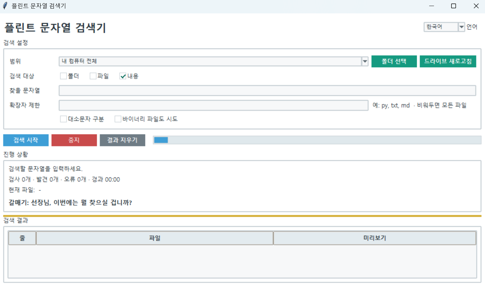

플린트 스트링 파인더
버전: 1.0.0
Flint String Finder
여러 드라이브나 폴더에서 특정 문자열이 포함된 파일을 찾는 Windows용 GUI 검색 도구입니다.
사용 방법
- 검색 범위를 선택합니다. (내 컴퓨터 전체, 드라이브, 폴더)
찾을 문자열을 입력합니다.- 필요한 경우 확장자 제한(
py, md, txt등)과 대소문자 구분 옵션을 설정합니다. 검색 시작을 누릅니다.- 결과를 더블클릭하면 해당 파일을 바로 열 수 있습니다.
주요 기능
- 내 컴퓨터 전체 또는 특정 드라이브 검색
- 특정 폴더 검색
- 파일 내용 문자열 검색
- 현재 검사 파일, 검사 수, 발견 수, 오류 수 표시
- 경과 시간 및 진행 상태 표시
- 검색 중지
- 결과 더블클릭으로 파일 열기
- 긴 검색 중 플린트 선장 & 갈매기 진행 멘트
실행:
python finder.py
참고:실행 파일(EXE) 버전을 사용하는 경우에는 python 명령을 실행할 필요가 없습니다.